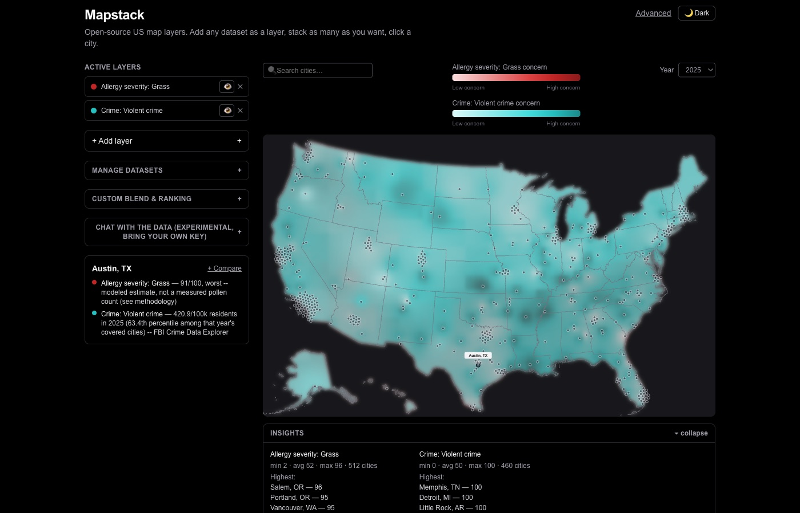

41 real, free, keyless datasets across the full 512-city US spine. Add any of them as a layer, stack as many as you want, click a city — the same rendering pipeline drives every one of them, because every dataset speaks one small, shared interface. No dataset-specific map code, ever.

Two real datasets stacked on one map -- allergy severity and FBI violent-crime rates -- each with its own legend, year control, and a sourced detail line. Live at the link above.
Allergy Locator shipped first: a full, validated US allergy-severity map with real ground-truth data, county-level gradients, and day-by-day forecasting. Once a second real dataset (healthcare access — nearest hospital by drive time) got built the same way inside that project, the shared shape between the two became clear enough to actually generalize — rather than guessing at an abstraction from a single case.
The full reasoning behind the split lives in Allergy Locator's own writeup.
Every dataset — no matter how different its underlying data looks — implements the exact same shape: a fixed list of layers, an optional list of real years it has history for, and a lookup that returns a 0–100 value on a shared "higher = more concerning" scale, plus a one-line human-readable detail.
// lib/datasets/types.ts interface Dataset { id: string; label: string; layers: DatasetLayer[]; supportsTime: boolean; availableYears?: number[]; // real years only, e.g. crime's [2020..2024] getValue(cityId, layerId, context?): { value: number; // 0-100, higher = more concerning detail: string; // "72/100, high" or "Bellevue Hospital, 4 min" } | null; // null = a real gap, never a fabricated value }
That's it. Implement getValue, register the dataset once, and the exact same MultiLayerMap/AddLayerPanel components render it — continuous gradient, click-to-select detail panel, legend, a year control if it has real history, all of it — with zero new rendering code. Any number of layers from any number of datasets can be active on the map at once, each stacked as its own gradient (Allergy Locator's proven stacked-opacity pattern, generalized across datasets instead of just allergens).
All free, all keyless, across the full 512-city spine — every one of them ships its own methodology doc naming its real sourcing and honest gaps. A few that show the sourcing rigor best:
Ported from Allergy Locator's own validated grass ground-truth (MAE 2.3) plus 28 modeled allergens.
Real violent- and property-crime rates from the FBI Crime Data Explorer, with genuine 2020–2025 year-by-year history.
Real 2024 county election margins (MEDSL) — competitiveness, deliberately not a left/right lean score. A real "TOTAL VOTES CAST" sentinel-row bug in WI/SC's raw data was found and fixed, not papered over.
National Register of Historic Places, joined by a live server-side spatial radius query — one HTTP call per city, no bulk download.
EPA Superfund sites near each city — correctly labeled as a "Parish" in Louisiana instead of assuming "County" everywhere.
NOAA Storm Events Database. An in-progress year is disclosed as real partial-year coverage in its own detail text, never shown as a false zero.
Nearest hospital by real drive time — general, pediatric specialty, and pediatric cardiac surgery.
Real Census ACS broadband-subscription rates, via County Health Rankings' free republication — full 512-city coverage.
REAL, measured elevated-grass-pollen-day counts from a real county health station — not modeled. Intentionally sparse (7/512 cities) rather than a fabricated national estimate.
In the spirit of the "never fabricate, always disclose" rule this whole project runs on: all 41, with exactly where their numbers come from.
Every row above links to the real, live, public source it was fetched from — no scraping behind a login, no purchased panel data. Full sourcing detail, real coverage numbers, and known gaps for each one live in this repo's own data/*-methodology.md files.
A sortable, filterable table across every dataset and every city at /advanced, with CSV export, saved views, and a live custom-blend formula editor across any 2+ layers.
Bring your own API key — Anthropic, OpenAI, or Google — and ask questions in plain language. The model calls the same read-only functions the map itself uses; it never sees or stores your key server-side.
The same closed, read-only tool set the in-app chat uses, exposed over stdio for Claude Desktop, Claude Code, or any MCP-compatible agent — runs entirely on your own machine, no hosting, no secrets.
Wherever a source actually publishes multiple years, the year control is live — not interpolated or backfilled, only years the source itself reports.